news
3.3.2025
Really excited to be part of Dr. Shabina Aslam's new play, "Teaspoon of Shampoo", about a fake doctor who treated thousands of people for over 30 years. The Look North crew from BBC1 came over and did a piece on us during one of our rehearsals. Tickets are all sold out but there's a waiting list if you're lucky. See you there!
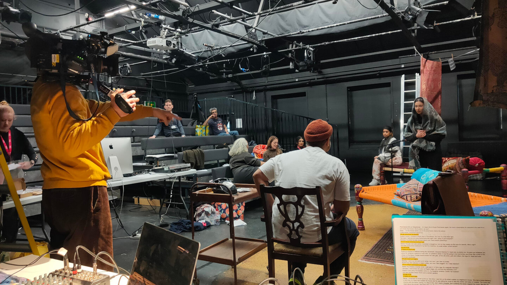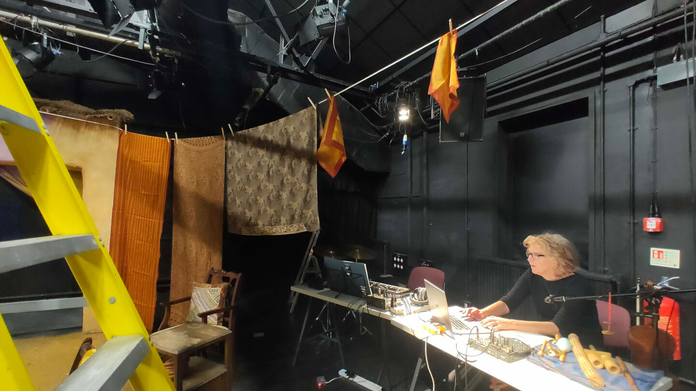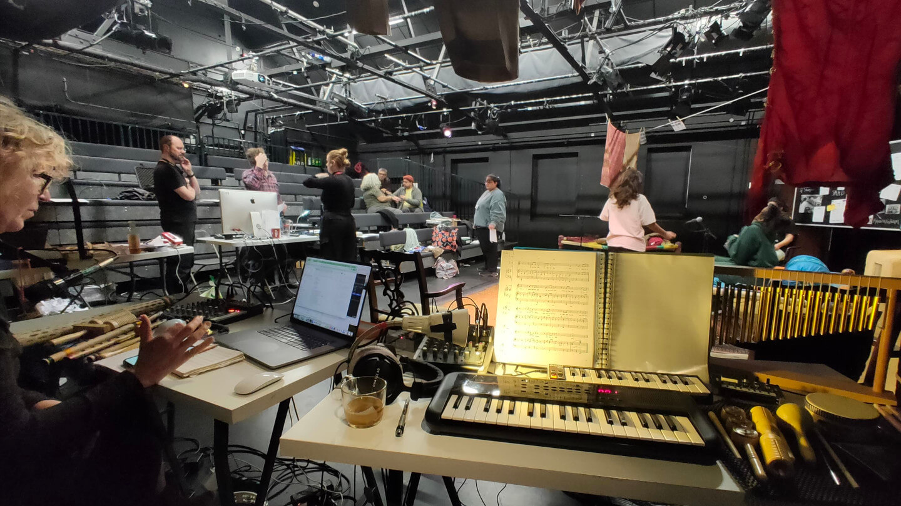
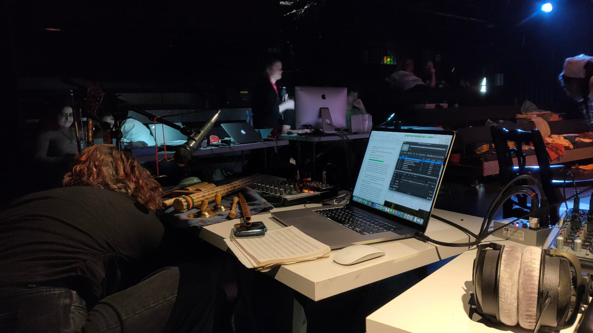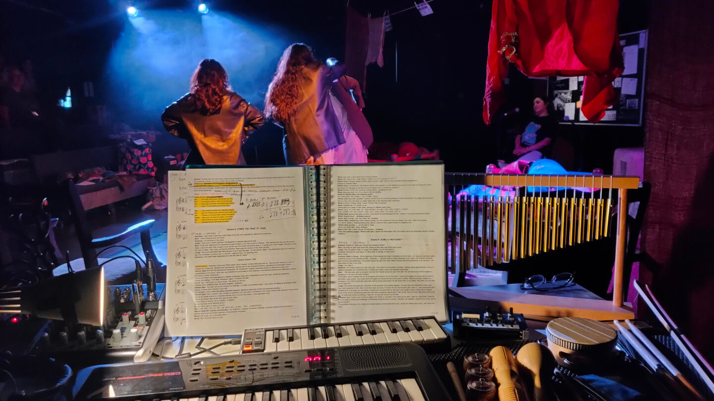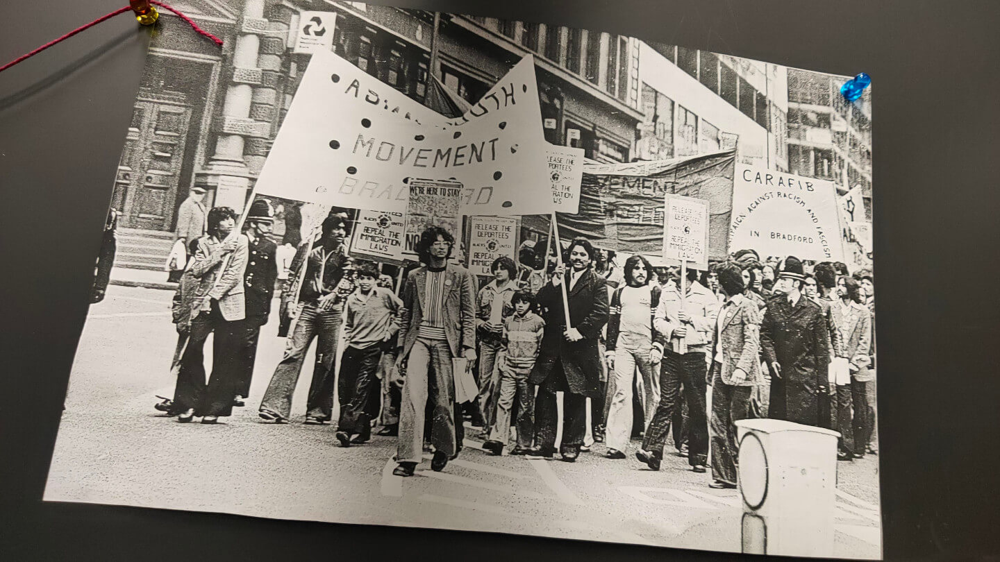
6.2.2025
Thankful to be included in Augustin Bousfield's Bradford City of Culture 2025 Playlist for BBC Radio 6 Music. Have a listen (we're 24:25 in).
24.1.2025
We spent the day at Nave Studios with Ozzy Moysey and the Leeds Improv Orchestra - new album sometime out this year, perhaps?!
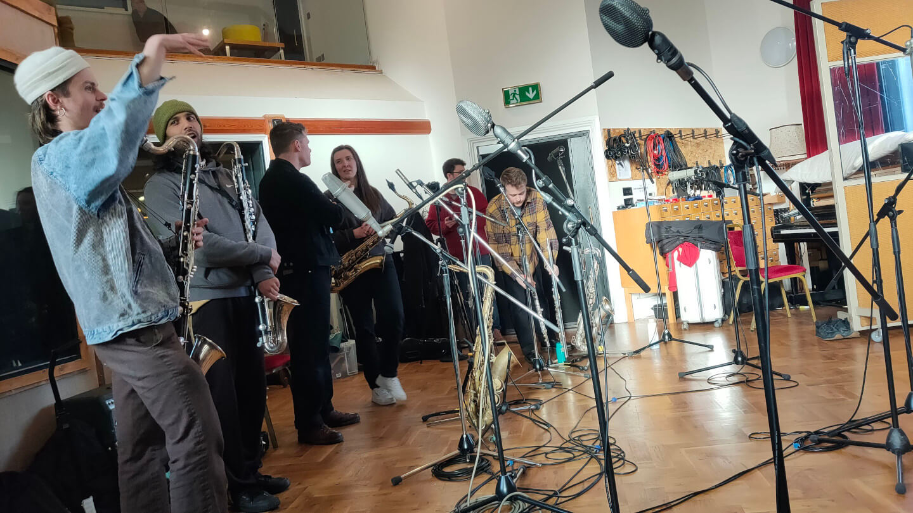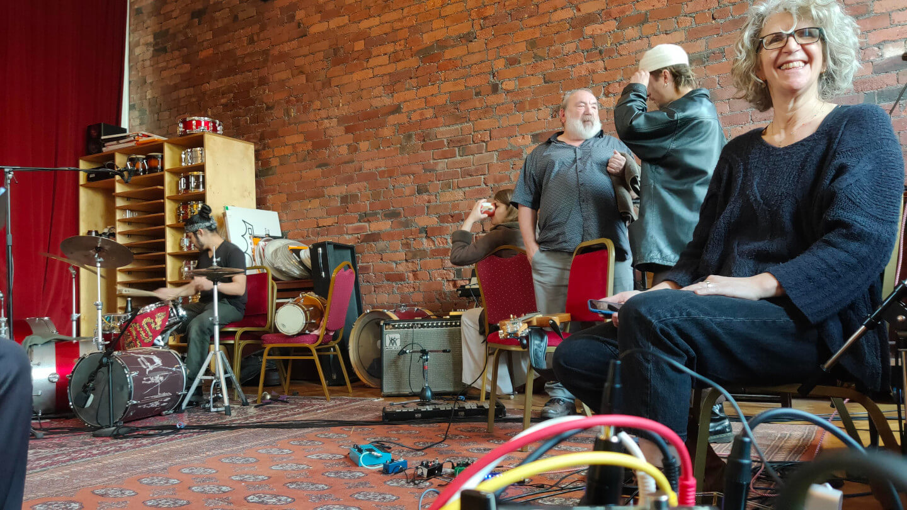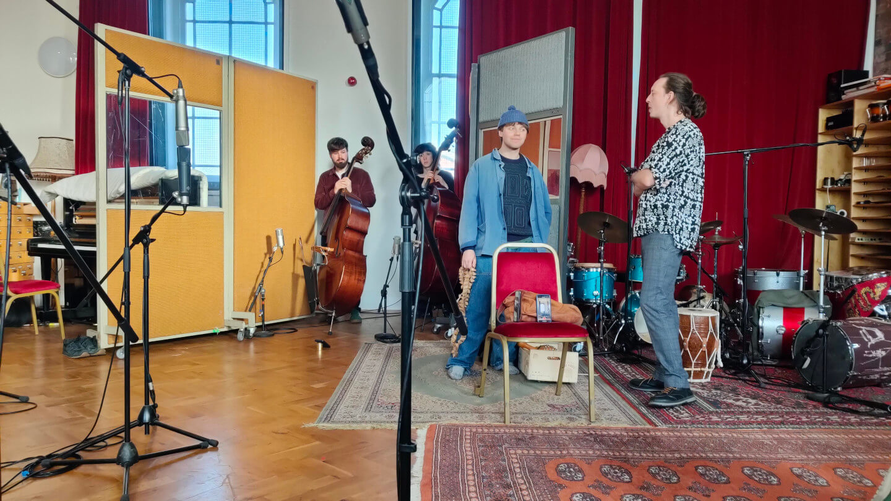
12.12.2024
Perfomance at the celebration of Theatre in the Mill's re-opening.
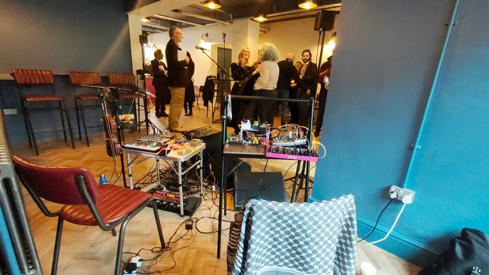
27.7.2024
Our set at Edible Archives' Drinking St George's Hall event for BD:Festival 2024.
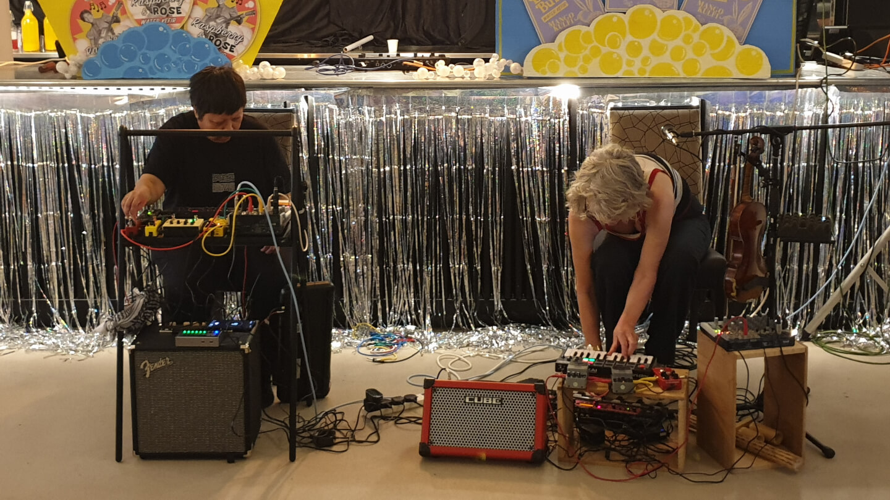
releases
Upcoming
| DATE | EVENT | LINK |
|---|---|---|
| 2025 | Album with Ozzy Moysey | |
| 20 Jun 2025 | Gilank + Hexama, Rumble up the Ryshworth | Tickets |
| 17 May 2025 | The Bradford Progress | Tickets |
| 06 - 08 Mar 2025 | A Teaspoon of Shampoo, Theatre in the Mill | Tickets |
Current
| DATE | RELEASE TITLE | LENGTH | TRACK |
|---|---|---|---|
| 07 Jan 2025 | Night Freight | (15:35) | |
| 18 Dec 2024 | Suspended in a Sunbeam | (09:39) | |
| 29 Nov 2024 | There's a Strange Noise Coming Through the Speakers - Radio Edit | (04:52) | |
| 29 Nov 2024 | Shiver Training | (26:56) | |
| 21 Oct 2024 | There's a Strange Noise Coming Through the Speakers | (10:45) | |
| 21 Sep 2024 | The Occurrence at Rombalds Moor | (13:45) | |
| 21 Sep 2024 | Arranging Orchids | (15:23) | |
| 21 Sep 2024 | Dreaming by Theia | (13:42) | |
| 21 Sep 2024 | Towards The End | (07:53) | |
| 02 Sep 2024 | Live at St George’s Hall | (11:41) | |
| 28 Jul 2024 | Gendang Hujan | (13:38) | |
| 28 Jul 2024 | Mega-City One | (09:17) | |
| 26 Jul 2024 | Rapture | (14:52) | |
| 26 Jul 2024 | Stasis Rains | (18:22) | |
| 23 Jul 2024 | The Rising | (10:56) | |
| 14 Jul 2024 | Temporal Flow | (10:07) |
Previous
| DATE | EVENT |
|---|---|
| 12 Dec 2024 | Live at Theatre in the Mill reopening |
| 29 Oct 2024 | Live at The Noise Upstairs |
| 27 Jul 2024 | Live at Edible Archives' Drinking St George's Hall event for BD:Festival 2024 |
| 24 Feb 2024 | Live at Rewired Beats, North Parade organised by The Collector |